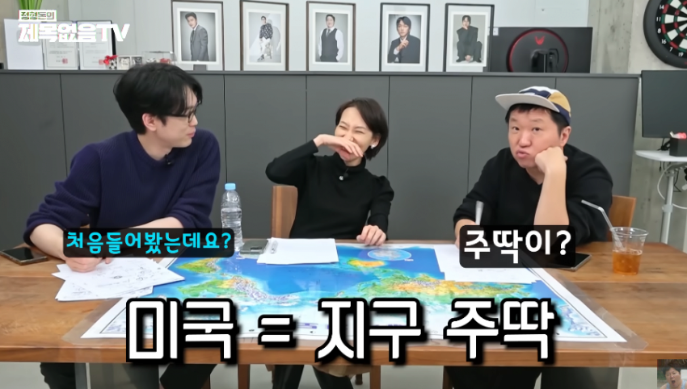
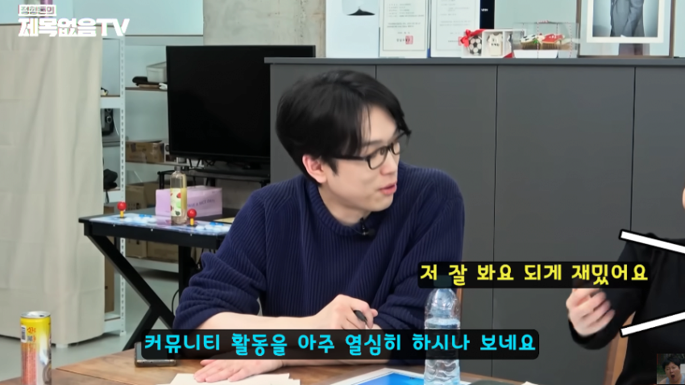
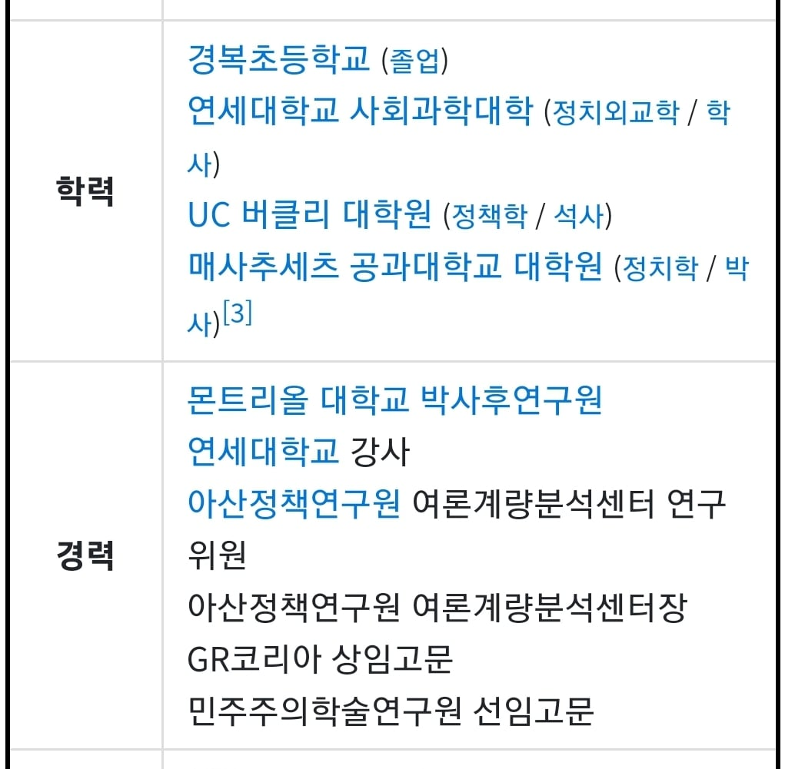

주딱을 알고계시는 교수님



주딱을 알고계시는 교수님
저 학력이 아쉬운거라고..?
초등학교 말하는듯
ㅋㅋㅋㅋㅋㅋㅋㅋㅋㅋㅋ 지는 씨발ㅋㅋㅋ
매사추세츠 공과대학교(MIT)의 정치학과(Department of Political Science)는 공학 중심 대학으로 유명하지만, 사회과학 분야에서도 세계 최정상급의 명성과 연구력을 자랑합니다. 주요 평가기관별 랭킹은 다음과 같습니다.
미국 대학원 순위 (US News & World Report 기준):
미국 내 TOP 10 내외 (보통 7위~10위권 유지)
특히 정치학 세부 전공 중 정치 방법론(Political Methodology) 및 정량적 연구(Quantitative Analysis) 분야에서는 미국 내 손꼽히는 최상위권(1~2위 다툼)으로 평가받습니다.
QS 세계 대학 학과 순위 (QS World University Rankings by Subject: Politics & International Studies):
세계 10위권 후반 ~ 20위권 내외 (예년 기준 세계 13위~15위 등 최상위권 그룹에 위치)
논문 피인용도(Citations per Paper) 부문에서 매우 높은 점수를 기록하고 있습니다.
MIT 정치학부는 정성적 연구에 치우치기 쉽고 전통적인 정치학계에서 데이터 과학, 통계 모델링, 경제학적 접근(정치경제학 등)을 결합한 실증적·과학적 연구 방법론을 선도하는 곳으로 매우 유명합니다.
대권 안하는게 미스테리인 사람인데 가성비라고??ㅋㅋㅋㅋㅋㅋ
학력이 어케 되십니까 선생님
어그로 연습중이면 인정한다
아이언맨이랑 동문이야 병신아..
조선이 혹시 윗동네인가요??
ㅋㅋㅋㅋㅋ아 시박 채팅에 지윤게이야… 이지랄 존나 웃김
Zzzzzzzz
ㅋㅋㅋㅋㅋㅋㅋ
갤에서 랩실 노예라도 탐색중이신가...
교수 아님
그냥 지구라는 메갤의 분탕러가 트럼프인데 ㅋㅋㅋ
주딱이 분탕에 관종인 망갤되는중 ㅋㅋㅋ
주딱이 갤 망치고 있다!!!
모르는게 맞다
이거 뭔가 월가 트레이더 들이
한국 네이버 주식 게시판 보는거랑 같은거 아님 ㅋㅋ
(진짜봄)
지윤게이야...니가 자랑스럽다노...
저 학벌로 교수가 못됐네..논문 퀄이 먼긴 안좋나
학력이 뭔가 아쉬운데 가성비 지렸네